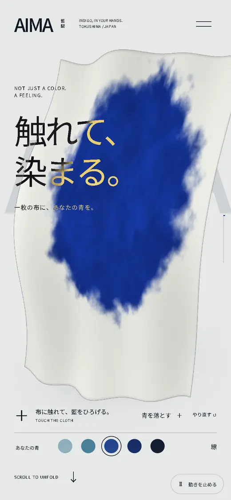
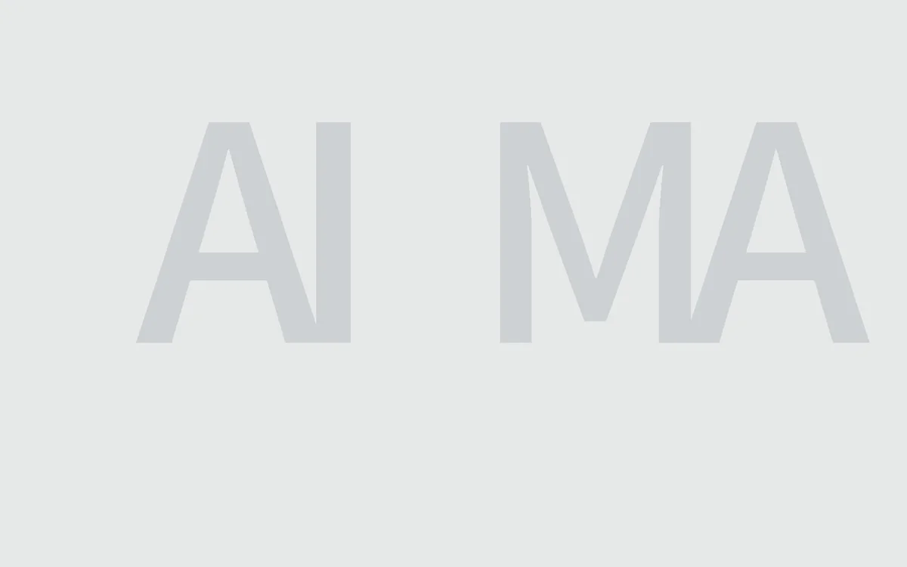
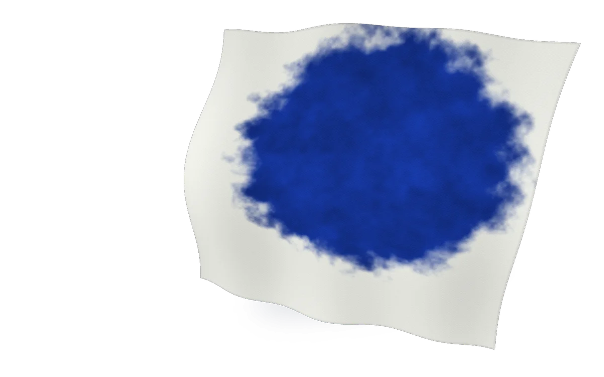
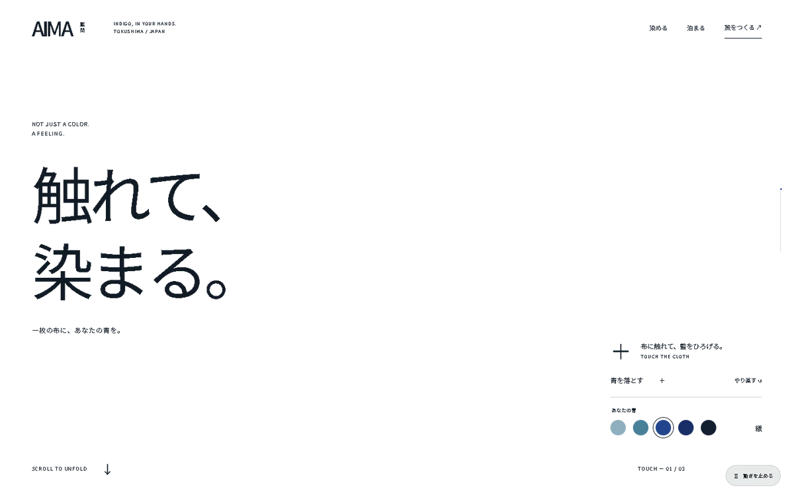
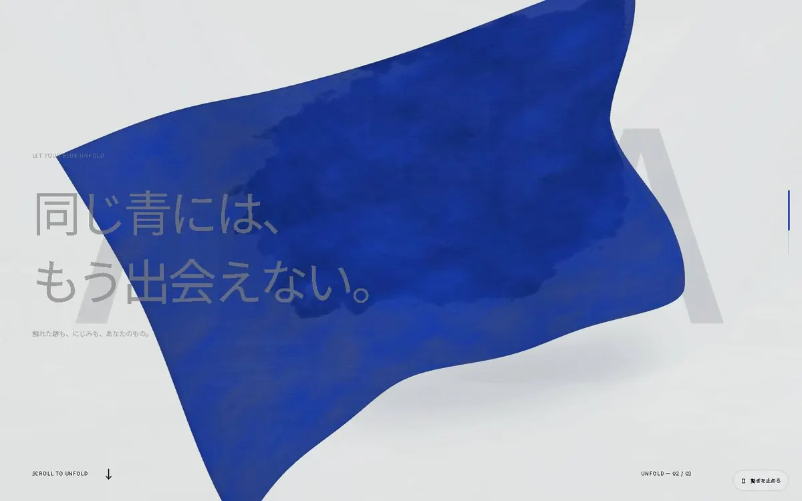
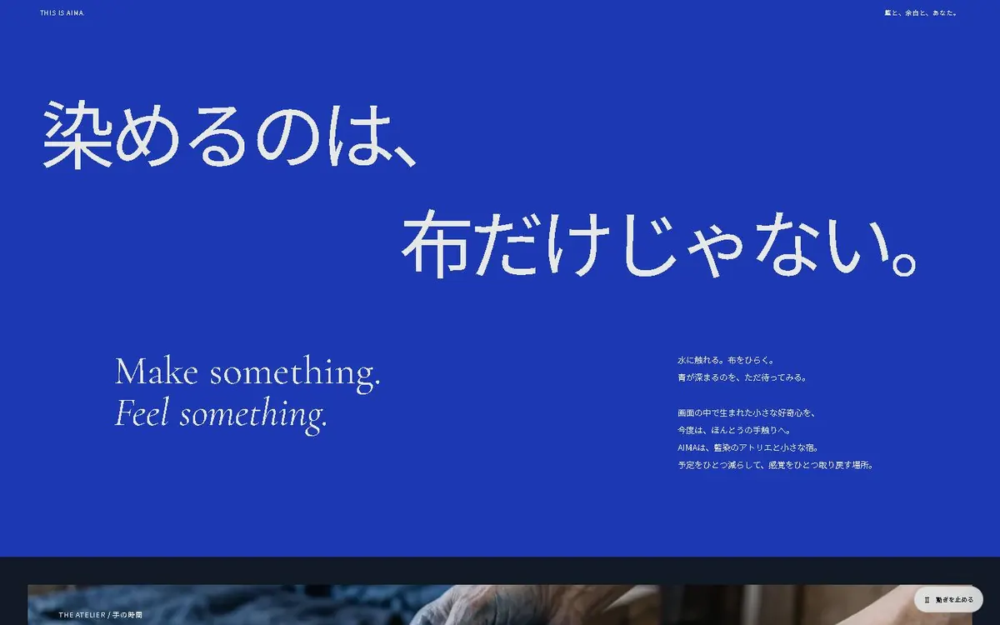
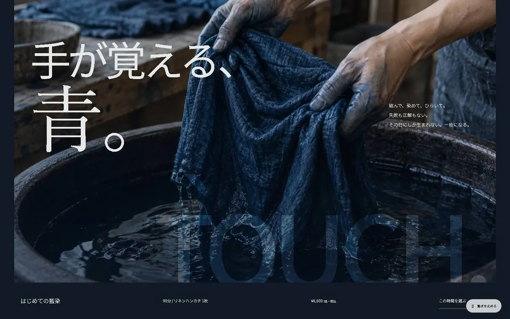

公開中のサイトを、実際に触って録った映像です。
01 / THE IDEA
見る前に、少しだけ染めてもらう。
藍染の工房と宿は、写真と文章だけだと「きれいな青」で終わってしまいます。そこで、サイトの操作そのものを、染める体験の予告にしました。
布に触れると、その点から藍が広がっていく。途中で青を選び直せば、染まった所ごと色が変わる。選んだ青は、ページの最後で旅の予定をまとめる「しおり」にも残ります。
02 / HOW IT'S BUILT
設計を見る
AIMA の最初の画面は、3枚の層を重ねてできています。
-
見出しは左の1列に、布の色を選ぶ丸いボタンは右下の1か所にまとめました。スクロールで進む章ごとに、見せる場面は1つだけです。
見出しの字は、下にある色によって明暗が入れ替わります。灰の地の上では墨色に、藍に重なると白く抜けます。
-
布は、見出しやボタンとは別の層に描いています。字を読んでいる間も布はゆっくり揺れていて、触れた所だけが染まります。
-
いちばん奥は、霧の灰の地と、薄い灰の「AIMA」だけ。使う色は3つ、書体は2つです。
霧の灰 #E6E8E8墨 #111A24藍 #1C39B3Noto Sans JP（ほとんどの字）／Cormorant Garamond（英字の一言と値段）



触れると、3枚の層に分かれます
03 / SCENES
ページの中の3つの場面

SCENE01
このサイトの最初の画面には、触れた所から藍がにじむ布があります。その布が、にじみを残したまま大きく広がる場面。「自分で染めた青」だと感じてもらうためです。

SCENE02
サイトで生まれた興味を、本物の手ざわりへつなぐ章。写真を置かず、言葉と藍の色だけで見せています。

SCENE03
画面の布から、本物の工房の写真へ。体験の時間と値段もここに並べ、旅の予定づくりへ進めるようにしました。